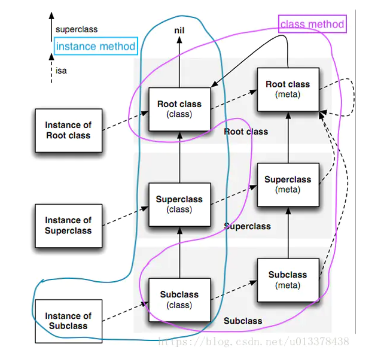

Runtime
资料
-
无忘无往的文章列表：对Runtime讲解的非常清晰易读
-
SEL类型数据和selector的用法：SEL就是方法的包装，包含了调用地址
介绍
将一些在编译和链接过程中的工作，放到了运行阶段。
能力
- 可以运行时新增类、方法、属性等
- 可以运行时交换两个方法
- 获得某个类所有成员方法、成员变量
对象 & 类实现
所有的类、元类，都是运行时创建的。
- 普通@interface定义的对象，都是从NSObject继承的。其存在一个属性，即
Class isa。 Class类型，是struct objc_class的定义objc_class继承自objc_objectobjc_class中有三个成员Class superclass指向父类cache_t cache优化方法调用的cacheclass_data_bits_t bits标明Class的属性的
objc_object是Runtime层的对象。而类是一种特殊的对象，即对象的继承对象 (OC中id类型也是定义为该结构体类型)objc_object仅有一个isa_t isa属性isa_t是一个联合体，可能描述了对象的属性，也可能指向了一个类- 元类不是父类
示意图：（来源https://www.jianshu.com/p/b42db8b06088）

消息
- SEL定义为
struct objc_selector（目前仅是一个字符串，苹果将其实现隐藏了） - 不同类的同名方法（即使参数不同），它们的SEL也是相同的
@selector及sel_registerName可以获取SEL方法选择器- IMP实际上是一个函数指针
- 在cache中存的是
method_t类型，里面包含了SEL和IMP
消息调用示意图：（来源：https://www.jianshu.com/p/782d7ce86d0f）
消息调用流程
- 实例对象通过isa找到它的类对象
- 在类对象的缓存方法列表中寻找指定方法
- 如果缓存中没有，就到当前类的方法列表中寻找
- 如果方法列表中没有，就通过superclass到父类的方法列表中寻找
- 如果父类方法类别也没有，那么就动态解析（Method Resolution）
- 如果消息解析后还没找到，那么就消息转发（Method Forwarding）
- 如果还是没找到，程序就崩溃，如果2~6步骤中有一个找到，则返回对应的函数实现（IMP）
类方法的调用类似，但是是会去元类中找
动态解析，需要重写NSObject的resolveInstanceMethod来实现
消息转发，可以分两步处理：
- 先调用
forwardingTargetForSelector，返回可以处理的对象 - 上面不响应，则调用
methodSignatureForSelector，返回函数签名，然后调用forwardInvocation
流程参考：